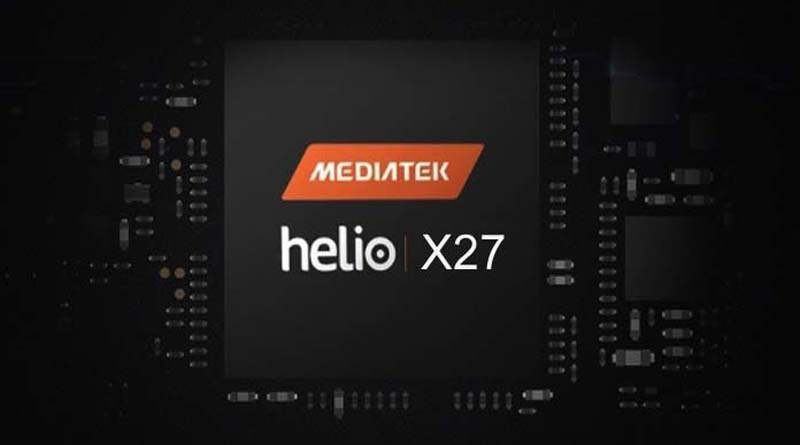

Описание:
MediaTek Helio X27 (MT6797X) provides three processor clusters, each designed to more efficiently handle different types of workloads. The premium MediaTek Helio X27 features a maximized clock frequency across all three clusters, with an unequaled maximum of 2.6GHz on the powerful ARM Cortex-A72 cluster.
Much like adding gears to vehicles, dividing the cores into three clusters provides a more efficient allocation of tasks for optimum performance and extended battery life. It can delegate simple tasks to one cluster of cores, while directing more complex (and more power-hungry) tasks to the other clusters. For example, if the smartphone is doing only simple tasks, such as sending text messages or running the calculator on one cluster, the other clusters can power down ready for when required, therefore, driving both smoother, responsive performance and an extended battery life. In addition, the MediaTek Helio X27 includes the latest MiraVision EnergySmart Screen to further enhance power efficiency.
The MediaTek Helio X27 is designed for smartphones with dual-cameras and includes color and mono sensor support. This multiple-sensor design can capture three times the light of a traditional single-bayer sensor, thus reducing image noise and increasing quality. It features a built-in 3D depth engine for depth of field processing, as well as multi-scale de-noise engines, for faster response time between shots and unprecedented detail, color, and sharpness, even under extreme conditions.
The display can be refreshed at up to 120 fps for crisp and responsive scrolling of web content and maps, and with an ARM Mali-T880 MP4 GPU up to 875MHz, it yields uncompromised performance in games with high-resolution graphics.
Meanwhile, an integrated sensor hub featuring the embedded ARM Cortex-M4 processor operates on an isolated, low-power domain to support diverse always-on applications, such as MP3 playback and voice activation.